INI Seminar/Talk 20181003 T. Levy
2d Yang–Mills holonomy process
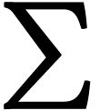 a compact surface or 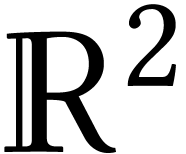. We need areas, so we consider a volume form on
.
 a compact Lie group, connected. 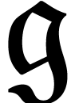
a Lie algebra with scalar product 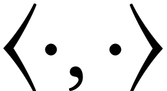.
Example 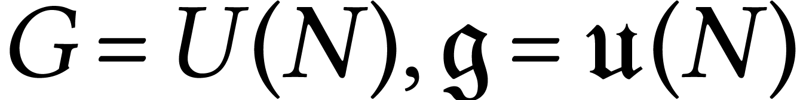 and 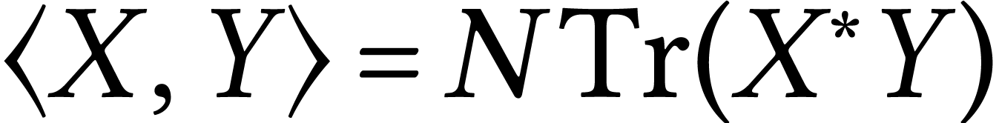.
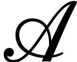 connections on the principal bundle 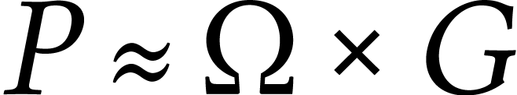.
a compact Lie group, connected. 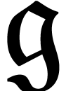
a Lie algebra with scalar product 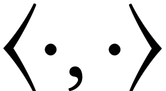.
Example 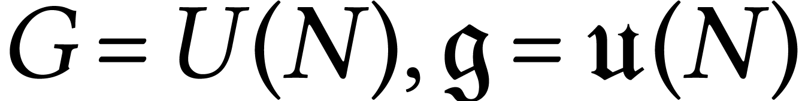 and 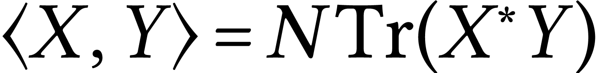.
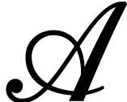 connections on the principal bundle 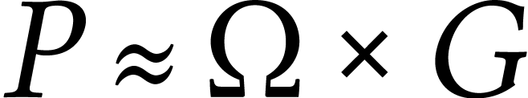.
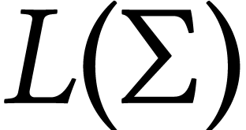: continuous loops on with finite length, up to re-param. (finite lenght is a diffeo invariant notion).
We want to describe a collection of –valued
random variables 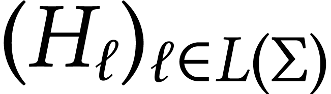 such that their distribution is
heuristically given by
This is a probability measure on (–valued)
 -forms on the manifold which is invariant under certain transformations.
-forms on the manifold which is invariant under certain transformations.
Multiplicativity
If 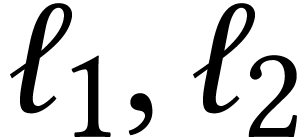 are two loops based on the same point then we must have
where 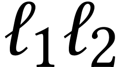 is the concatenation of the two loops and 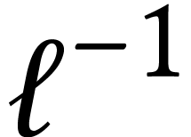 is the loop run in opposite sense.
The curvature 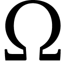 of the random connection is distributed like white noise. Since curvature controls the infinitesimal holonomies we should expect this to show up in 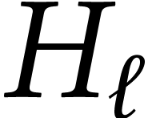.
We imagine: 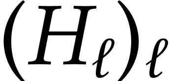 is Brownian motion/bridge on indexed by with the area
playing the role of time.
Lattice Yang–Mills theory
(Finite dimensional marginals of the holonomy process)
We start from our surface and discretize it by
drawing a graph 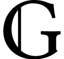 over it (e.g. a triangulation).
It is a real embedded graph. 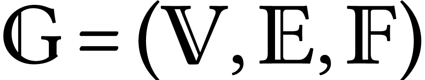 where 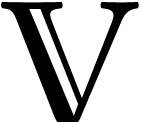 are points of the surface and  which are edges embedded in the surface. Therefore it has faces 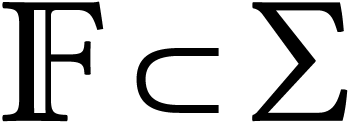. (we assume orientation for each
edge in )
which are edges embedded in the surface. Therefore it has faces 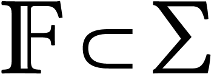. (we assume orientation for each
edge in )
Configuration space 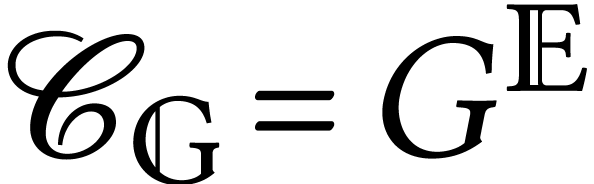. Let 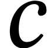 be a path in , that is : 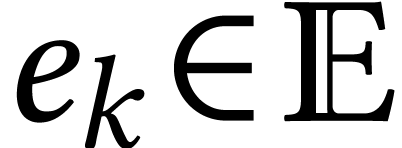 and 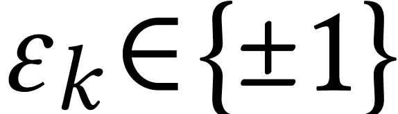 an orientation. Then we consider the discrete holonomy

This is a discrete version of a connection. There is a natural
probability measure on 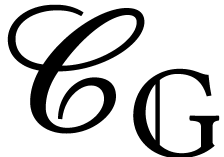 by taking the product
measure of Haar measure on .
To make it more interesting we take the heat kernel on :
fundamental solution of the heat equation
It satisfies
Sengupta's formula (Migdal, Witten, Driver)

This expression has the advantage that it gives a consistent family of probability measures, namely it is invariant under subdivisions.
Consider two graphs, 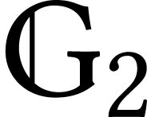 finer than . We have a natural map 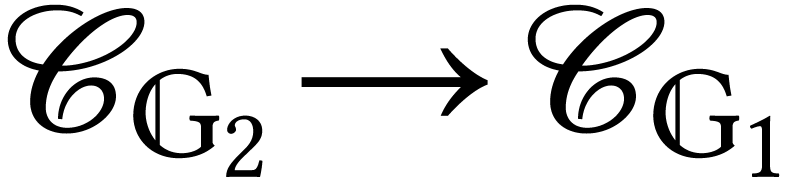
by decimation which preserves the measure: 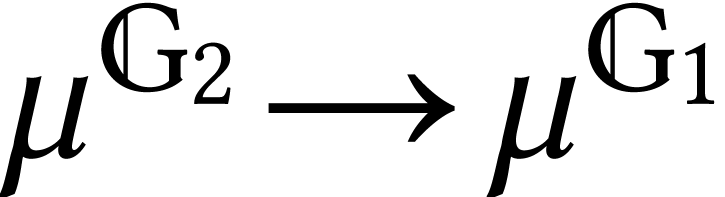.
Consider a face  of which
is split in two in as in this figure:
of which
is split in two in as in this figure:
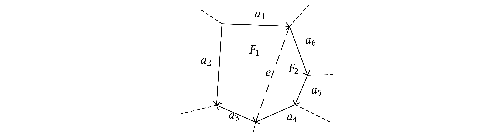
Here 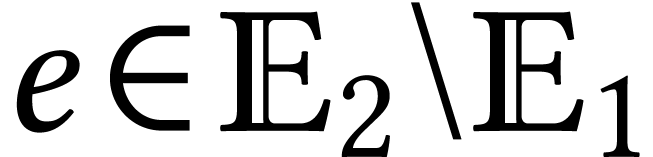. Now 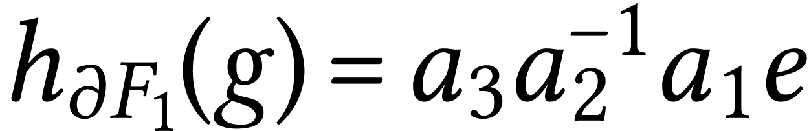 and 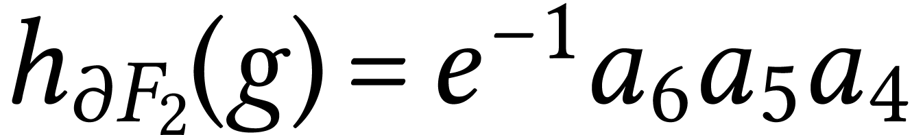, 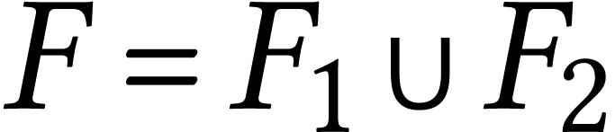 and 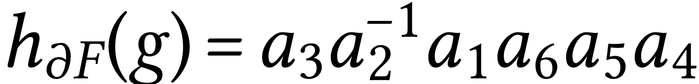. The convolution of the heat–kernel allows for the following computation
This is the reason to use the heat kernel in the definition of 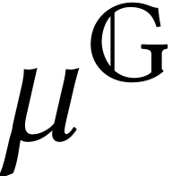.
Theorem  -valued
r.v.s, unique in distribution, which is consistent with the lattice
theory and stochastically continuous.
-valued
r.v.s, unique in distribution, which is consistent with the lattice
theory and stochastically continuous.
Ilya Chevyrev has a recent preprint where he defines a space of distributional connections on which he is able to define a probability measures and holonomies whose law coincide with the holonomy process.
Example  ,
then
,
then
so 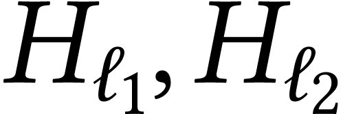 are independent and distributed like the
Brownian motion on at time
and . If the two loops have
non disjoint areas then we can write them as three loops  with disjoint areas of size 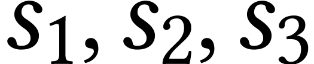 such
that ,
and now
with disjoint areas of size 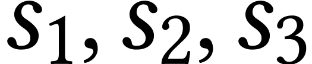 such
that ,
and now
Example . Then outside there is
third face of area . In this
case Sengupta's formula gives:
with . So now where is a Brownian bridge on conditioned to return to at
time .
The large N limit.
We consider expectations of Wilson's loops:
We are going to do some simple computations of numbers of this kind which reveal some combinatorical phenomena which will “resurface” also in MM equations.
Take . . a loop of area on
where is the Brownian motion on . We use the notation (normalized trace) so that .
The BM on is given by an SDE. Take a linear Brownian motion on such that
Given this we can compute
so
Let us try to compute
In order to compute we take an ONB of and we say that . We therefore conclude that
We use now the following identity
which is proven by proving first that it does not depend on the basis and then using your preferred basis to do the computation.
| (1) |
We are now going to evaluate with similar method
and now use that
which gives a second equation:
| (2) |
and (1) (2) form a system of ODEs which can be solved to give:
These relations express connections between unitary Brownian motions and the combinatorics of permutations and random walks in the symmetric group.
Take  and a permutation
cycle lenghts
and a permutation
cycle lenghts
Then I claim that we have
where  indicate when are
in the same cycle of .
Therefore, in principle, one can solve this huge family of equations and
taking the limit one can prove the following
theorem:
indicate when are
in the same cycle of .
Therefore, in principle, one can solve this huge family of equations and
taking the limit one can prove the following
theorem:
Theorem
Another theorem says:
Theorem

Makeenko–Migdal equation
This last theorem gives a sort of law of large numbers in which it plays a role the function
The MM equations give informations about . Take a loop , we want to compute It depends on the combinatorial structure of the loop and the area of the faces it identifies
The MM equations tells us how this number changes when we distort the loop. Look at an intersection
Where are the loops obtained by removing the intersection as shown in the picture. The MM equations are known to be true on the plane and on the sphere and the finite version are also known on certain surfaces (which?).
The value of on a simple loop is . Loops with one intersection point and disjoint areas give
A loop with on intersection point and one area inside the other (large area and small area ). Call the value of
Then
When we change the area of the unbounded face we get
so we can solve and obtain
which give the limiting value we found before.